CODING AGENTS AS PIXEL WORLD MODELS
traex/DeepSeek-V4.1-Flash · phygen_022
点击播放 · 原生 RGB 像素
逐轮保存的候选
回放视频、检查图与代码变化。
每份候选均可单独播放。实际图片检查记录在下方工具轨迹中。
候选 01播放与检查图
点击播放 · 原生 RGB 像素
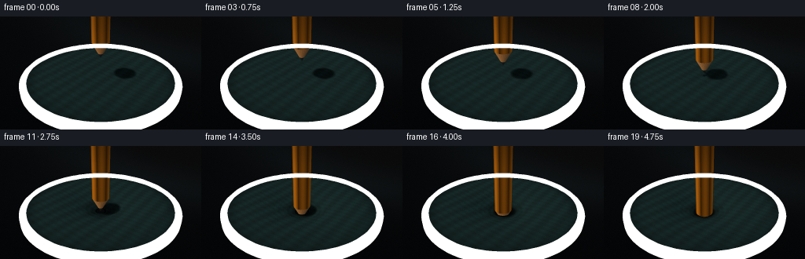
展开代码变化
--- 上一保存版本
+++ 本次保存版本
@@ -0,0 +1,448 @@
+from pathlib import Path
+
+import cv2
+import numpy as np
+from PIL import Image
+
+import artifact_io
+
+
+WIDTH = 256
+HEIGHT = 144
+FRAMES = 20
+FPS = 4.0
+SUPERSAMPLE = 3
+
+OUT_W = WIDTH * SUPERSAMPLE
+OUT_H = HEIGHT * SUPERSAMPLE
+
+# A restrained, warm studio light against cool rubber and a yellow lacquer pencil.
+CAMERA = np.array([1.22, 1.72, 2.72], dtype=np.float64)
+TARGET = np.array([0.0, 0.02, 0.0], dtype=np.float64)
+LIGHT = np.array([-0.62, 1.0, 0.38], dtype=np.float64)
+LIGHT /= np.linalg.norm(LIGHT)
+
+RIM_RADIUS = 1.23
+PENCIL_RADIUS = 0.145
+CONE_LENGTH = 0.27
+GRAPHITE_LENGTH = 0.082
+BASE_Y = -0.012
+RUPTURE_DEPTH = 0.135
+
+
+def normalize(v):
+ return v / np.linalg.norm(v)
+
+
+def smoothstep(x):
+ x = np.clip(x, 0.0, 1.0)
+ return x * x * (3.0 - 2.0 * x)
+
+
+def camera_rays():
+ forward = normalize(TARGET - CAMERA)
+ right = normalize(np.cross(forward, np.array([0.0, 1.0, 0.0])))
+ up = np.cross(right, forward)
+ aspect = OUT_W / OUT_H
+ tan_half = np.tan(np.deg2rad(15.7))
+
+ xs = (np.arange(OUT_W, dtype=np.float64) + 0.5) / OUT_W * 2.0 - 1.0
+ ys = 1.0 - (np.arange(OUT_H, dtype=np.float64) + 0.5) / OUT_H * 2.0
+ xx, yy = np.meshgrid(xs, ys)
+ directions = (
+ forward[None, None, :]
+ + xx[..., None] * (tan_half * aspect) * right[None, None, :]
+ + yy[..., None] * tan_half * up[None, None, :]
+ )
+ directions /= np.linalg.norm(directions, axis=2, keepdims=True)
+ return right, up, forward, directions
+
+
+RIGHT, UP, FORWARD, RAYS = camera_rays()
+
+
+def project(points):
+ points = np.asarray(points, dtype=np.float64)
+ rel = points - CAMERA
+ x = rel @ RIGHT
+ y = rel @ UP
+ z = rel @ FORWARD
+ aspect = OUT_W / OUT_H
+ tan_half = np.tan(np.deg2rad(15.7))
+ sx = (x / (z * tan_half * aspect) + 1.0) * 0.5 * (OUT_W - 1)
+ sy = (1.0 - y / (z * tan_half)) * 0.5 * (OUT_H - 1)
+ return np.stack([sx, sy], axis=-1)
+
+
+def motion_tip_y(frame):
+ t = frame / (FRAMES - 1)
+ # A slow, deliberate press with almost imperceptible acceleration.
+ eased = 0.18 * t + 0.82 * smoothstep(t)
+ return 0.305 - 0.755 * eased
+
+
+def membrane_height(x, z, tip_y):
+ r = np.sqrt(x * x + z * z)
+ base = np.full_like(r, BASE_Y)
+ contact = np.maximum(0.0, 0.018 - tip_y)
+
+ # The sheet is visibly tensioned even before contact: faint radial strain
+ # remains in the material and catches the key light.
+ base += 0.0016 * np.cos(r * 38.0) * np.exp(-(r / 1.05) ** 2)
+
+ if contact <= 0.0:
+ return base, np.full_like(r, -1.0), contact
+
+ if contact <= RUPTURE_DEPTH:
+ contact_r = 0.052
+ shoulder = np.maximum(r - contact_r, 0.0)
+ drop = contact * np.exp(-((shoulder / 0.39) ** 1.58))
+ h = BASE_Y - drop
+ h = np.where(r < contact_r, tip_y + 0.006, h)
+ hole_r = np.full_like(r, -1.0)
+ else:
+ growth = (contact - RUPTURE_DEPTH) / 0.36
+ hole_r = 0.050 + 0.075 * np.clip(growth, 0.0, 1.0)
+ rim_depth = RUPTURE_DEPTH + 0.032 * np.clip(growth, 0.0, 1.0)
+ shoulder = np.maximum(r - hole_r, 0.0)
+ h = BASE_Y - rim_depth * np.exp(-((shoulder / 0.42) ** 1.52))
+ h = np.where(r < hole_r, np.nan, h)
+
+ # Fine, world-space wrinkles make the deformation feel like a real
+ # elastomer instead of a smooth mathematical funnel.
+ strain = np.exp(-((r - 0.16) / 0.25) ** 2) * min(contact / 0.25, 1.0)
+ h += 0.0026 * np.sin(2.0 * np.pi * r / 0.135 + 0.7) * strain
+ return h, hole_r, contact
+
+
+def intersect_heightfield(origin, directions, tip_y):
+ t_plane = (BASE_Y - origin[1]) / directions[..., 1]
+ t0 = t_plane - 0.78
+ t1 = t_plane + 1.35
+ steps = 46
+ prev_t = t0.copy()
+ prev_p = origin[None, None, :] + directions * prev_t[..., None]
+ prev_h, _, _ = membrane_height(prev_p[..., 0], prev_p[..., 2], tip_y)
+ prev_f = prev_p[..., 1] - prev_h
+
+ hit = np.zeros(t0.shape, dtype=bool)
+ lo = np.zeros_like(t0)
+ hi = np.zeros_like(t0)
+ for i in range(1, steps + 1):
+ t = t0 + (t1 - t0) * (i / steps)
+ p = origin[None, None, :] + directions * t[..., None]
+ h, _, _ = membrane_height(p[..., 0], p[..., 2], tip_y)
+ f = p[..., 1] - h
+ crossing = np.isfinite(prev_f) & np.isfinite(f) & (prev_f > 0.0) & (f <= 0.0) & ~hit
+ lo[crossing] = prev_t[crossing]
+ hi[crossing] = t[crossing]
+ hit |= crossing
+ prev_t, prev_f = t, f
+
+ for _ in range(9):
+ mid = 0.5 * (lo + hi)
+ p = origin[None, None, :] + directions * mid[..., None]
+ h, _, _ = membrane_height(p[..., 0], p[..., 2], tip_y)
+ f = p[..., 1] - h
+ above = np.isfinite(f) & (f > 0.0)
+ lo = np.where(above, mid, lo)
+ hi = np.where(above, hi, mid)
+
+ t_hit = 0.5 * (lo + hi)
+ points = origin[None, None, :] + directions * t_hit[..., None]
+ radial = np.sqrt(points[..., 0] ** 2 + points[..., 2] ** 2)
+ hit &= radial < RIM_RADIUS
+ return hit, t_hit, points
+
+
+def pencil_intersection(origin, directions, tip_y):
+ ox, oy, oz = origin
+ dx, dy, dz = directions[..., 0], directions[..., 1], directions[..., 2]
+ best_t = np.full(dx.shape, np.inf)
+ region = np.zeros(dx.shape, dtype=np.uint8)
+ side_angle = np.zeros(dx.shape)
+
+ body_start = tip_y + CONE_LENGTH
+ # Cylinder side.
+ a = dx * dx + dz * dz
+ b = 2.0 * (ox * dx + oz * dz)
+ c = ox * ox + oz * oz - PENCIL_RADIUS * PENCIL_RADIUS
+ disc = b * b - 4.0 * a * c
+ valid = (disc >= 0.0) & (a > 1e-10)
+ root = np.sqrt(np.maximum(disc, 0.0))
+ tc = np.where(valid, (-b - root) / (2.0 * np.maximum(a, 1e-10)), np.inf)
+ yc = oy + tc * dy
+ cyl = valid & (tc > 0.0) & (yc >= body_start) & (yc <= 3.8)
+ best_t = np.where(cyl & (tc < best_t), tc, best_t)
+ region = np.where(cyl & (tc <= best_t + 1e-9), 1, region)
+ xc = ox + np.where(np.isfinite(tc), tc, 0.0) * dx
+ zc = oz + np.where(np.isfinite(tc), tc, 0.0) * dz
+ side_angle = np.where(cyl, np.arctan2(zc, xc), side_angle)
+
+ # Sharpened cone, including the graphite point.
+ k = PENCIL_RADIUS / CONE_LENGTH
+ yy = oy - tip_y
+ qa = dx * dx + dz * dz - k * k * dy * dy
+ qb = 2.0 * (ox * dx + oz * dz - k * k * yy * dy)
+ qc = ox * ox + oz * oz - k * k * yy * yy
+ qdisc = qb * qb - 4.0 * qa * qc
+ qvalid = (qdisc >= 0.0) & (np.abs(qa) > 1e-10)
+ qroot = np.sqrt(np.maximum(qdisc, 0.0))
+ tq1 = np.where(qvalid, (-qb - qroot) / (2.0 * np.maximum(np.abs(qa), 1e-10) * np.sign(qa + 1e-14)), np.inf)
+ tq2 = np.where(qvalid, (-qb + qroot) / (2.0 * np.maximum(np.abs(qa), 1e-10) * np.sign(qa + 1e-14)), np.inf)
+ for tq in (tq1, tq2):
+ yq = oy + tq * dy
+ cone = qvalid & (tq > 0.0) & (yq >= tip_y) & (yq <= body_start)
+ better = cone & (tq < best_t - 1e-8)
+ best_t = np.where(better, tq, best_t)
+ region = np.where(better, np.where(yq < tip_y + GRAPHITE_LENGTH, 2, 3), region)
+ xq = ox + np.where(np.isfinite(tq), tq, 0.0) * dx
+ zq = oz + np.where(np.isfinite(tq), tq, 0.0) * dz
+ side_angle = np.where(better, np.arctan2(zq, xq), side_angle)
+
+ hit = np.isfinite(best_t) & (best_t < 1e6)
+ points = origin[None, None, :] + directions * np.where(hit, best_t, 0.0)[..., None]
+ return hit, best_t, points, region, side_angle
+
+
+def background_color(directions):
+ # Dark seamless studio sweep with a soft warm pool behind the subject.
+ x = directions[..., 0]
+ y = directions[..., 1]
+ radial = np.sqrt((x * 0.72) ** 2 + ((y + 0.10) * 1.4) ** 2)
+ glow = np.exp(-(radial / 0.56) ** 2)
+ top = np.array([0.018, 0.025, 0.032])
+ low = np.array([0.072, 0.055, 0.044])
+ col = top[None, None, :] * (0.65 + 0.35 * (1.0 - smoothstep((0.05 - y) / 1.0)))[..., None]
+ col += low[None, None, :] * (0.45 * glow[..., None])
+ # A cool rim separates the dark hoop from the background.
+ col += np.array([0.016, 0.028, 0.031])[None, None, :] * np.exp(-((radial - 0.42) / 0.10) ** 2)[..., None]
+ return col
+
+
+def shade_membrane(points, tip_y, frame):
+ x, y, z = points[..., 0], points[..., 1], points[..., 2]
+ eps = 0.0022
+ hx0, _, _ = membrane_height(x - eps, z, tip_y)
+ hx1, _, _ = membrane_height(x + eps, z, tip_y)
+ hz0, _, _ = membrane_height(x, z - eps, tip_y)
+ hz1, _, _ = membrane_height(x, z + eps, tip_y)
+ hx = np.nan_to_num((hx1 - hx0) / (2.0 * eps), nan=0.0)
+ hz = np.nan_to_num((hz1 - hz0) / (2.0 * eps), nan=0.0)
+ normals = np.stack([-hx, np.ones_like(hx), -hz], axis=-1)
+ normals /= np.linalg.norm(normals, axis=-1, keepdims=True) + 1e-8
+
+ view = normalize(CAMERA - points)
+ n_dot_l = np.clip(np.sum(normals * LIGHT[None, None, :], axis=-1), 0.0, 1.0)
+ half_vec = normalize(LIGHT + view)
+ spec = np.clip(np.sum(normals * half_vec, axis=-1), 0.0, 1.0) ** 34.0
+ broad_spec = np.clip(np.sum(normals * half_vec, axis=-1), 0.0, 1.0) ** 7.0
+
+ # Soft shadow from the pencil body, cast toward the lower right.
+ body_start = tip_y + CONE_LENGTH
+ t_shadow = (body_start - y) / LIGHT[1]
+ sx = x + LIGHT[0] * t_shadow
+ sz = z + LIGHT[2] * t_shadow
+ sd = np.sqrt(sx * sx + sz * sz)
+ body_shadow = smoothstep((sd - PENCIL_RADIUS) / 0.075)
+ shadow = 0.22 + 0.78 * body_shadow
+
+ r = np.sqrt(x * x + z * z)
+ contact = np.maximum(0.0, 0.018 - tip_y)
+ ao = 1.0 - 0.48 * np.exp(-((r - 0.10) / 0.18) ** 2) * min(contact / 0.18, 1.0)
+ edge_ao = 1.0 - 0.22 * smoothstep((r - (RIM_RADIUS - 0.20)) / 0.20)
+
+ # Subtle world-space elastomer grain, plus concentric strain glints.
+ grain = (
+ np.sin(29.0 * x + 7.0 * z)
+ + 0.55 * np.sin(61.0 * z - 17.0 * x + 1.3)
+ + 0.28 * np.sin(113.0 * x + 97.0 * z + 0.2)
+ ) / 1.83
+ strain = np.exp(-((r - 0.20) / 0.26) ** 2) * min(contact / 0.22, 1.0)
+ glint = 0.5 + 0.5 * np.sin(r * 76.0 - 0.8)
+ glint *= strain * (0.35 + 0.65 * broad_spec)
+
+ base = np.array([0.035, 0.105, 0.112])
+ warm = np.array([0.135, 0.195, 0.175])
+ cool = np.array([0.026, 0.075, 0.105])
+ col = base[None, None, :] * (0.45 + 0.20 * grain[..., None])
+ col += warm[None, None, :] * (0.52 * n_dot_l[..., None] * shadow[..., None])
+ col += cool[None, None, :] * (0.28 * (0.5 - 0.5 * n_dot_l)[..., None])
+ col += np.array([0.78, 0.88, 0.78])[None, None, :] * (0.17 * broad_spec[..., None])
+ col += np.array([1.0, 0.92, 0.72])[None, None, :] * (0.34 * spec[..., None])
+ col += np.array([0.15, 0.32, 0.28])[None, None, :] * (0.16 * glint[..., None])
+ col *= (ao * edge_ao * (0.50 + 0.50 * shadow))[..., None]
+
+ # The torn lip catches a narrow, cooler highlight.
+ if contact > RUPTURE_DEPTH:
+ growth = np.clip((contact - RUPTURE_DEPTH) / 0.36, 0.0, 1.0)
+ hole_r = 0.050 + 0.075 * growth
+ lip = np.exp(-((r - hole_r) / 0.012) ** 2)
+ col += np.array([0.18, 0.35, 0.33])[None, None, :] * (0.42 * lip[..., None])
+ return np.clip(col, 0.0, 1.0)
+
+
+def shade_pencil(points, region, side_angle):
+ normals = np.zeros_like(points)
+ x, y, z = points[..., 0], points[..., 1], points[..., 2]
+
+ cone_mask = region >= 2
+ r = np.sqrt(x * x + z * z) + 1e-8
+ normals[cone_mask] = np.stack(
+ [
+ x[cone_mask] / r[cone_mask],
+ np.full(np.count_nonzero(cone_mask), PENCIL_RADIUS / CONE_LENGTH),
+ z[cone_mask] / r[cone_mask],
+ ],
+ axis=-1,
+ )
+
+ body_mask = region == 1
+ facet = np.floor((side_angle + np.pi / 6.0) / (np.pi / 3.0)) * (np.pi / 3.0)
+ normals[body_mask] = np.stack(
+ [np.cos(facet[body_mask]), np.zeros(np.count_nonzero(body_mask)), np.sin(facet[body_mask])],
+ axis=-1,
+ )
+ normals /= np.linalg.norm(normals, axis=-1, keepdims=True) + 1e-8
+
+ view = normalize(CAMERA - points)
+ diffuse = np.clip(np.sum(normals * LIGHT[None, None, :], axis=-1), 0.0, 1.0)
+ half_vec = normalize(LIGHT + view)
+ spec = np.clip(np.sum(normals * half_vec, axis=-1), 0.0, 1.0) ** 48.0
+
+ col = np.zeros_like(points)
+ yellow = np.array([0.88, 0.47, 0.055])
+ dark_yellow = np.array([0.34, 0.16, 0.018])
+ facet_mix = 0.58 + 0.42 * (0.5 + 0.5 * np.cos(side_angle * 6.0))
+ col[body_mask] = (
+ yellow[None, :] * (0.42 + 0.58 * diffuse[body_mask, None]) * facet_mix[body_mask, None]
+ + dark_yellow[None, :] * (0.14 * (1.0 - facet_mix[body_mask, None]))
+ )
+ # Fine dark seams between the six lacquered facets.
+ seam = np.abs(np.sin(side_angle * 3.0)) ** 32.0
+ col[body_mask] *= (1.0 - 0.33 * seam[body_mask, None])
+ col += np.array([1.0, 0.83, 0.40])[None, None, :] * (0.44 * spec[..., None] * body_mask[..., None])
+
+ wood = region == 3
+ wood_col = np.array([0.56, 0.34, 0.16])
+ col[wood] = wood_col[None, :] * (0.35 + 0.65 * diffuse[wood, None])
+ col[wood] += np.array([0.40, 0.25, 0.11])[None, :] * (
+ 0.15 * (0.5 + 0.5 * np.sin(side_angle[wood] * 38.0))[:, None]
+ )
+
+ graphite = region == 2
+ col[graphite] = (
+ np.array([0.045, 0.050, 0.052])[None, :] * (0.55 + 0.70 * diffuse[graphite, None])
+ )
+ col[graphite] += np.array([0.34, 0.39, 0.41])[None, :] * (0.52 * spec[graphite, None])
+
+ # A cool reflected edge keeps the dark tip readable against the teal sheet.
+ edge = np.clip(1.0 - np.abs(np.sum(normals * view, axis=-1)), 0.0, 1.0) ** 4
+ col += np.array([0.12, 0.24, 0.25])[None, None, :] * (0.12 * edge[..., None] * cone_mask[..., None])
+ return np.clip(col, 0.0, 1.0)
+
+
+def draw_hoop(image):
+ angles = np.linspace(0.0, 2.0 * np.pi, 97)
+ inner = RIM_RADIUS - 0.020
+ outer = RIM_RADIUS + 0.083
+
+ for i in range(len(angles) - 1):
+ a0, a1 = angles[i], angles[i + 1]
+ mid = 0.5 * (a0 + a1)
+ top = 0.035
+ bottom = -0.065
+ pts = np.array(
+ [
+ [outer * np.cos(a0), top, outer * np.sin(a0)],
+ [outer * np.cos(a1), top, outer * np.sin(a1)],
+ [outer * np.cos(a1), bottom, outer * np.sin(a1)],
+ [outer * np.cos(a0), bottom, outer * np.sin(a0)],
+ ]
+ )
+ quad = project(pts)
+ side = 0.5 + 0.5 * np.dot(np.array([np.cos(mid), 0.0, np.sin(mid)]), LIGHT)
+ color = np.array([18, 27, 29]) + side * np.array([53, 61, 55])
+ cv2.fillConvexPoly(image, np.round(quad).astype(np.int32), color.tolist(), lineType=cv2.LINE_AA)
+
+ cap = np.array(
+ [
+ [inner * np.cos(a0), top, inner * np.sin(a0)],
+ [outer * np.cos(a0), top, outer * np.sin(a0)],
+ [outer * np.cos(a1), top, outer * np.sin(a1)],
+ [inner * np.cos(a1), top, inner * np.sin(a1)],
+ ]
+ )
+ cap_quad = project(cap)
+ facing = 0.5 + 0.5 * np.dot(np.array([np.cos(mid), 0.0, np.sin(mid)]), LIGHT)
+ cap_color = np.array([27, 35, 34]) + facing * np.array([72, 77, 66])
+ cv2.fillConvexPoly(image, np.round(cap_quad).astype(np.int32), cap_color.tolist(), lineType=cv2.LINE_AA)
+
+ # Fine inner catchlight, drawn as a continuous projected curve.
+ lip = np.stack(
+ [
+ inner * np.cos(angles),
+ np.full_like(angles, 0.038),
+ inner * np.sin(angles),
+ ],
+ axis=-1,
+ )
+ screen = np.round(project(lip)).astype(np.int32)
+ cv2.polylines(image, [screen], False, (119, 126, 108), 2, cv2.LINE_AA)
+ return image
+
+
+def render_frame(frame):
+ tip_y = motion_tip_y(frame)
+ origin = CAMERA
+ bg = background_color(RAYS)
+
+ m_hit, m_t, m_points = intersect_heightfield(origin, RAYS, tip_y)
+ p_hit, p_t, p_points, p_region, p_angle = pencil_intersection(origin, RAYS, tip_y)
+
+ image = bg.copy()
+ m_col = shade_membrane(m_points, tip_y, frame)
+ image[m_hit] = m_col[m_hit]
+
+ pencil_closer = p_hit & (~m_hit | (p_t < m_t))
+ p_col = shade_pencil(p_points, p_region, p_angle)
+ image[pencil_closer] = p_col[pencil_closer]
+
+ # A near-black cavity under the rupture gives the puncture real depth.
+ contact = max(0.0, 0.018 - tip_y)
+ if contact > RUPTURE_DEPTH:
+ growth = np.clip((contact - RUPTURE_DEPTH) / 0.36, 0.0, 1.0)
+ hole_r = 0.050 + 0.075 * growth
+ # Darken the rim-adjacent membrane and any visible cavity.
+ rr = np.sqrt(m_points[..., 0] ** 2 + m_points[..., 2] ** 2)
+ cavity = m_hit & (rr < hole_r + 0.035) & ~pencil_closer
+ image[cavity] *= np.array([0.18, 0.24, 0.25])
+
+ # Gentle vignette and a whisper of sensor grain.
+ yy, xx = np.mgrid[0:OUT_H, 0:OUT_W]
+ vx = (xx / (OUT_W - 1) - 0.5) * 2.0
+ vy = (yy / (OUT_H - 1) - 0.5) * 2.0
+ vignette = 1.0 - 0.24 * smoothstep((np.sqrt(vx * vx * 0.65 + vy * vy) - 0.38) / 0.75)
+ image *= vignette[..., None]
+ rng = np.random.default_rng(2200 + frame)
+ grain = rng.normal(0.0, 0.0045, size=(OUT_H, OUT_W, 1))
+ image = np.clip(image + grain, 0.0, 1.0)
+
+ image = draw_hoop(image)
+ image = np.clip(image, 0.0, 1.0)
+ image8 = (image ** (1.0 / 1.05) * 255.0 + 0.5).astype(np.uint8)
+ return cv2.resize(image8, (WIDTH, HEIGHT), interpolation=cv2.INTER_AREA)
+
+
+def main():
+ frames = []
+ for frame in range(FRAMES):
+ print(f"rendering frame {frame + 1:02d}/{FRAMES}", flush=True)
+ frames.append(render_frame(frame))
+ frames = np.stack(frames)
+ artifact_io.save(frames, Path(__file__).resolve().parent)
+ print("wrote frames, pixels.npz, inspection.png, transition_check.png, index.html")
+
+
+if __name__ == "__main__":
+ main()
候选 02播放与检查图
点击播放 · 原生 RGB 像素

展开代码变化
--- 上一保存版本
+++ 本次保存版本
@@ -23,7 +23,7 @@
LIGHT /= np.linalg.norm(LIGHT)
RIM_RADIUS = 1.23
-PENCIL_RADIUS = 0.145
+PENCIL_RADIUS = 0.172
CONE_LENGTH = 0.27
GRAPHITE_LENGTH = 0.082
BASE_Y = -0.012
@@ -211,12 +211,12 @@
y = directions[..., 1]
radial = np.sqrt((x * 0.72) ** 2 + ((y + 0.10) * 1.4) ** 2)
glow = np.exp(-(radial / 0.56) ** 2)
- top = np.array([0.018, 0.025, 0.032])
- low = np.array([0.072, 0.055, 0.044])
- col = top[None, None, :] * (0.65 + 0.35 * (1.0 - smoothstep((0.05 - y) / 1.0)))[..., None]
- col += low[None, None, :] * (0.45 * glow[..., None])
+ top = np.array([0.038, 0.054, 0.064])
+ low = np.array([0.145, 0.112, 0.083])
+ col = top[None, None, :] * (0.72 + 0.28 * (1.0 - smoothstep((0.05 - y) / 1.0)))[..., None]
+ col += low[None, None, :] * (0.70 * glow[..., None])
# A cool rim separates the dark hoop from the background.
- col += np.array([0.016, 0.028, 0.031])[None, None, :] * np.exp(-((radial - 0.42) / 0.10) ** 2)[..., None]
+ col += np.array([0.025, 0.043, 0.048])[None, None, :] * np.exp(-((radial - 0.42) / 0.10) ** 2)[..., None]
return col
@@ -245,12 +245,12 @@
sz = z + LIGHT[2] * t_shadow
sd = np.sqrt(sx * sx + sz * sz)
body_shadow = smoothstep((sd - PENCIL_RADIUS) / 0.075)
- shadow = 0.22 + 0.78 * body_shadow
+ shadow = 0.34 + 0.66 * body_shadow
r = np.sqrt(x * x + z * z)
contact = np.maximum(0.0, 0.018 - tip_y)
- ao = 1.0 - 0.48 * np.exp(-((r - 0.10) / 0.18) ** 2) * min(contact / 0.18, 1.0)
- edge_ao = 1.0 - 0.22 * smoothstep((r - (RIM_RADIUS - 0.20)) / 0.20)
+ ao = 1.0 - 0.34 * np.exp(-((r - 0.10) / 0.18) ** 2) * min(contact / 0.18, 1.0)
+ edge_ao = 1.0 - 0.17 * smoothstep((r - (RIM_RADIUS - 0.20)) / 0.20)
# Subtle world-space elastomer grain, plus concentric strain glints.
grain = (
@@ -262,23 +262,27 @@
glint = 0.5 + 0.5 * np.sin(r * 76.0 - 0.8)
glint *= strain * (0.35 + 0.65 * broad_spec)
- base = np.array([0.035, 0.105, 0.112])
- warm = np.array([0.135, 0.195, 0.175])
- cool = np.array([0.026, 0.075, 0.105])
- col = base[None, None, :] * (0.45 + 0.20 * grain[..., None])
- col += warm[None, None, :] * (0.52 * n_dot_l[..., None] * shadow[..., None])
- col += cool[None, None, :] * (0.28 * (0.5 - 0.5 * n_dot_l)[..., None])
- col += np.array([0.78, 0.88, 0.78])[None, None, :] * (0.17 * broad_spec[..., None])
- col += np.array([1.0, 0.92, 0.72])[None, None, :] * (0.34 * spec[..., None])
- col += np.array([0.15, 0.32, 0.28])[None, None, :] * (0.16 * glint[..., None])
- col *= (ao * edge_ao * (0.50 + 0.50 * shadow))[..., None]
+ base = np.array([0.060, 0.168, 0.178])
+ warm = np.array([0.245, 0.335, 0.290])
+ cool = np.array([0.045, 0.120, 0.155])
+ col = base[None, None, :] * (0.64 + 0.22 * grain[..., None])
+ col += warm[None, None, :] * (0.68 * n_dot_l[..., None] * shadow[..., None])
+ col += cool[None, None, :] * (0.34 * (0.5 - 0.5 * n_dot_l)[..., None])
+ col += np.array([0.78, 0.88, 0.78])[None, None, :] * (0.24 * broad_spec[..., None])
+ col += np.array([1.0, 0.92, 0.72])[None, None, :] * (0.42 * spec[..., None])
+ col += np.array([0.15, 0.32, 0.28])[None, None, :] * (0.23 * glint[..., None])
+ col *= (ao * edge_ao * (0.62 + 0.38 * shadow))[..., None]
# The torn lip catches a narrow, cooler highlight.
if contact > RUPTURE_DEPTH:
growth = np.clip((contact - RUPTURE_DEPTH) / 0.36, 0.0, 1.0)
hole_r = 0.050 + 0.075 * growth
- lip = np.exp(-((r - hole_r) / 0.012) ** 2)
- col += np.array([0.18, 0.35, 0.33])[None, None, :] * (0.42 * lip[..., None])
+ lip = np.exp(-((r - hole_r) / 0.014) ** 2)
+ col += np.array([0.20, 0.40, 0.38])[None, None, :] * (0.54 * lip[..., None])
+ theta = np.arctan2(z, x)
+ crease = np.exp(-((r - hole_r) / 0.105) ** 2)
+ crease *= (0.5 + 0.5 * np.sin(9.0 * theta + 2.2 * r / 0.07)) ** 12
+ col *= (1.0 - 0.22 * crease)[..., None]
return np.clip(col, 0.0, 1.0)
@@ -304,6 +308,8 @@
axis=-1,
)
normals /= np.linalg.norm(normals, axis=-1, keepdims=True) + 1e-8
+ normal_length = np.linalg.norm(normals, axis=-1)
+ normals[normal_length < 1e-7] = np.array([0.0, 1.0, 0.0])
view = normalize(CAMERA - points)
diffuse = np.clip(np.sum(normals * LIGHT[None, None, :], axis=-1), 0.0, 1.0)
@@ -311,12 +317,12 @@
spec = np.clip(np.sum(normals * half_vec, axis=-1), 0.0, 1.0) ** 48.0
col = np.zeros_like(points)
- yellow = np.array([0.88, 0.47, 0.055])
- dark_yellow = np.array([0.34, 0.16, 0.018])
- facet_mix = 0.58 + 0.42 * (0.5 + 0.5 * np.cos(side_angle * 6.0))
+ yellow = np.array([1.00, 0.575, 0.025])
+ dark_yellow = np.array([0.39, 0.17, 0.012])
+ facet_mix = 0.54 + 0.56 * (0.5 + 0.5 * np.cos(side_angle * 6.0))
col[body_mask] = (
yellow[None, :] * (0.42 + 0.58 * diffuse[body_mask, None]) * facet_mix[body_mask, None]
- + dark_yellow[None, :] * (0.14 * (1.0 - facet_mix[body_mask, None]))
+ + dark_yellow[None, :] * (0.10 * (1.0 - facet_mix[body_mask, None]))
)
# Fine dark seams between the six lacquered facets.
seam = np.abs(np.sin(side_angle * 3.0)) ** 32.0
@@ -332,9 +338,9 @@
graphite = region == 2
col[graphite] = (
- np.array([0.045, 0.050, 0.052])[None, :] * (0.55 + 0.70 * diffuse[graphite, None])
- )
- col[graphite] += np.array([0.34, 0.39, 0.41])[None, :] * (0.52 * spec[graphite, None])
+ np.array([0.070, 0.077, 0.079])[None, :] * (0.55 + 0.70 * diffuse[graphite, None])
+ )
+ col[graphite] += np.array([0.40, 0.45, 0.47])[None, :] * (0.56 * spec[graphite, None])
# A cool reflected edge keeps the dark tip readable against the teal sheet.
edge = np.clip(1.0 - np.abs(np.sum(normals * view, axis=-1)), 0.0, 1.0) ** 4
@@ -362,7 +368,7 @@
)
quad = project(pts)
side = 0.5 + 0.5 * np.dot(np.array([np.cos(mid), 0.0, np.sin(mid)]), LIGHT)
- color = np.array([18, 27, 29]) + side * np.array([53, 61, 55])
+ color = np.array([22, 30, 31]) + side * np.array([69, 75, 66])
cv2.fillConvexPoly(image, np.round(quad).astype(np.int32), color.tolist(), lineType=cv2.LINE_AA)
cap = np.array(
@@ -375,7 +381,7 @@
)
cap_quad = project(cap)
facing = 0.5 + 0.5 * np.dot(np.array([np.cos(mid), 0.0, np.sin(mid)]), LIGHT)
- cap_color = np.array([27, 35, 34]) + facing * np.array([72, 77, 66])
+ cap_color = np.array([30, 38, 37]) + facing * np.array([89, 91, 76])
cv2.fillConvexPoly(image, np.round(cap_quad).astype(np.int32), cap_color.tolist(), lineType=cv2.LINE_AA)
# Fine inner catchlight, drawn as a continuous projected curve.
@@ -388,7 +394,7 @@
axis=-1,
)
screen = np.round(project(lip)).astype(np.int32)
- cv2.polylines(image, [screen], False, (119, 126, 108), 2, cv2.LINE_AA)
+ cv2.polylines(image, [screen], False, (133, 139, 118), 2, cv2.LINE_AA)
return image
候选 03播放与检查图

候选 04播放与检查图
点击播放 · 原生 RGB 像素

展开代码变化
--- 上一保存版本
+++ 本次保存版本
@@ -102,8 +102,8 @@
hole_r = np.full_like(r, -1.0)
else:
growth = (contact - RUPTURE_DEPTH) / 0.36
- hole_r = 0.050 + 0.075 * np.clip(growth, 0.0, 1.0)
- rim_depth = RUPTURE_DEPTH + 0.032 * np.clip(growth, 0.0, 1.0)
+ hole_r = 0.043 + 0.025 * np.clip(growth, 0.0, 1.0)
+ rim_depth = RUPTURE_DEPTH + 0.020 * np.clip(growth, 0.0, 1.0)
shoulder = np.maximum(r - hole_r, 0.0)
h = BASE_Y - rim_depth * np.exp(-((shoulder / 0.42) ** 1.52))
h = np.where(r < hole_r, np.nan, h)
@@ -268,15 +268,15 @@
col = base[None, None, :] * (0.64 + 0.22 * grain[..., None])
col += warm[None, None, :] * (0.68 * n_dot_l[..., None] * shadow[..., None])
col += cool[None, None, :] * (0.34 * (0.5 - 0.5 * n_dot_l)[..., None])
- col += np.array([0.78, 0.88, 0.78])[None, None, :] * (0.24 * broad_spec[..., None])
- col += np.array([1.0, 0.92, 0.72])[None, None, :] * (0.42 * spec[..., None])
+ col += np.array([0.78, 0.88, 0.78])[None, None, :] * (0.11 * broad_spec[..., None])
+ col += np.array([1.0, 0.92, 0.72])[None, None, :] * (0.20 * spec[..., None])
col += np.array([0.15, 0.32, 0.28])[None, None, :] * (0.23 * glint[..., None])
col *= (ao * edge_ao * (0.62 + 0.38 * shadow))[..., None]
# The torn lip catches a narrow, cooler highlight.
if contact > RUPTURE_DEPTH:
growth = np.clip((contact - RUPTURE_DEPTH) / 0.36, 0.0, 1.0)
- hole_r = 0.050 + 0.075 * growth
+ hole_r = 0.043 + 0.025 * growth
lip = np.exp(-((r - hole_r) / 0.014) ** 2)
col += np.array([0.20, 0.40, 0.38])[None, None, :] * (0.54 * lip[..., None])
theta = np.arctan2(z, x)
@@ -418,11 +418,11 @@
contact = max(0.0, 0.018 - tip_y)
if contact > RUPTURE_DEPTH:
growth = np.clip((contact - RUPTURE_DEPTH) / 0.36, 0.0, 1.0)
- hole_r = 0.050 + 0.075 * growth
+ hole_r = 0.043 + 0.025 * growth
# Darken the rim-adjacent membrane and any visible cavity.
rr = np.sqrt(m_points[..., 0] ** 2 + m_points[..., 2] ** 2)
- cavity = m_hit & (rr < hole_r + 0.035) & ~pencil_closer
- image[cavity] *= np.array([0.18, 0.24, 0.25])
+ cavity = m_hit & (rr < hole_r + 0.018) & ~pencil_closer
+ image[cavity] *= np.array([0.36, 0.43, 0.44])
# Gentle vignette and a whisper of sensor grain.
yy, xx = np.mgrid[0:OUT_H, 0:OUT_W]
可观测工具轨迹
实际执行的命令与返回图片。
命令 1exit 0
/bin/bash -c "pwd && rg --files -g '"'!*.mp4'"' -g '"'!*.webm'"' | sed -n '1,160p'"
命令 2exit 0
/bin/bash -c 'cat prompt.txt'
命令 3exit 0
/bin/bash -c "find . -maxdepth 2 -type f -printf '%p\\n' | sort | sed -n '1,240p'; printf '\\nTOOLS\\n'; command -v ffmpeg; command -v python3; command -v blender; command -v node"
命令 4exit 0
/bin/bash -c "cat GENERATION_RULES.md && printf '\\n--- TASK SPEC ---\\n' && cat task_spec.json"
命令 5exit 0
/bin/bash -c "sed -n '1,260p' artifact_io.py"
命令 6exit 0
/bin/bash -c "sed -n '1,220p' player_template.html"
命令 7exit 0
/bin/bash -c "python3 - <<'PY'
import numpy, PIL
print('numpy', numpy.__version__)
print('PIL', PIL.__version__)
try:
import cv2; print('cv2', cv2.__version__)
except Exception as e: print('no cv2', e)
PY"命令 8exit 0
/bin/bash -c 'time python3 generate.py'
命令 9exit 0
/bin/bash -c "python3 - <<'PY'
from PIL import Image
import numpy as np
for i in [0,5,10,15,19]:
a=np.asarray(Image.open(f'frames/{i:02d}.png'))
print(i, 'mean', a.mean((0,1)).round(1), 'minmax', a.min(), a.max())
PY"命令 10exit 0
/bin/bash -c "python3 - <<'PY'
import numpy as np, cv2
from PIL import Image
for i in [0,10,18,19]:
a=cv2.imread(f'frames/{i:02d}.png')[:,:,::-1]
# center crop 64x80 nearest
crop=a[28:116,88:168]
Image.fromarray(crop).resize((480,528),Image.Resampling.NEAREST).save(f'.tmp/crop_{i}.png')
PY"命令 11exit 0
/bin/bash -c "python3 - <<'PY'
from PIL import Image
import numpy as np
a=np.asarray(Image.open('frames/18.png'))
for y in range(10,110,5):
print(y, [tuple(a[y,x]) for x in range(120,137,3)])
PY"命令 12exit 0
/bin/bash -c "python3 - <<'PY'
from PIL import Image
import numpy as np
a=np.asarray(Image.open('frames/18.png'))
for y in range(30,45):
print(y, (a[y]>245).all(1).sum(), a[y].mean(0).round(1), a[y,0], a[y,128], a[y,255])
PY"命令 13exit 0
/bin/bash -c 'time python3 generate.py'
命令 14exit 0
/bin/bash -c "python3 - <<'PY'
import numpy as np, cv2
from PIL import Image
for i in [0,5,10,14,17,19]:
a=cv2.imread(f'frames/{i:02d}.png')[:,:,::-1]
crop=a[24:118,86:170]
Image.fromarray(crop).resize((504,564),Image.Resampling.NEAREST).save(f'.tmp/crop2_{i}.png')
PY"命令 15exit 0
/bin/bash -c "python3 - <<'PY'
from PIL import Image
import numpy as np
for i in range(20):
a=np.asarray(Image.open(f'frames/{i:02d}.png'))
print(f'{i:02d}', a.mean((0,1)).round(1), (a>245).all(2).sum())
PY"命令 16exit 0
/bin/bash -c "python3 - <<'PY'
from PIL import Image
import numpy as np
a=np.asarray(Image.open('frames/00.png'))
m=(a>245).all(2)
ys,xs=np.where(m)
print(xs.min(),xs.max(),ys.min(),ys.max())
print(np.unique(ys,return_counts=True))
PY"命令 17exit 0
/bin/bash -c "python3 - <<'PY'
from PIL import Image
import numpy as np
a=np.asarray(Image.open('frames/00.png'))
m=(a>245).all(2)
for y in [34,35,36,37,38,39,40,41,42,43,44,45,46,47,48,49,50]:
xs=np.where(m[y])[0]
print(y, len(xs), (xs.min(),xs.max()) if len(xs) else '')
PY"命令 18exit 0
/bin/bash -c 'time python3 generate.py'
命令 19exit 0
/bin/bash -c "python3 - <<'PY'
import numpy as np, cv2
from PIL import Image
for i in [10,14,17,19]:
a=cv2.imread(f'frames/{i:02d}.png')[:,:,::-1]
crop=a[30:116,88:168]
Image.fromarray(crop).resize((480,516),Image.Resampling.NEAREST).save(f'.tmp/crop3_{i}.png')
PY"命令 20exit 0
/bin/bash -c "python3 - <<'PY'
from pathlib import Path
import json, numpy as np
from PIL import Image
root=Path('.')
spec=json.loads(Path('task_spec.json').read_text())
z=np.load('pixels.npz')['pixels']
frames=[np.asarray(Image.open(p)) for p in sorted(Path('frames').glob('*.png'))]
print('spec', spec)
print('pngs',len(frames),'shape',frames[0].shape,'dtype',frames[0].dtype)
print('npz',z.shape,z.dtype)
print('pixels_match',np.array_equal(z.transpose(2,0,1),np.stack(frames)[:,:,:,0]<<16 | np.stack(frames)[:,:,:,1]<<8 | np.stack(frames)[:,:,:,2]))
a=np.stack(frames).astype(float)
d=np.abs(a[1:]-a[:-1]).mean((1,2,3))
print('mean_abs_frame_delta',np.round(d,3).tolist())
print('artifact_sizes', {p.name:p.stat().st_size for p in [Path('pixels.npz'),Path('index.html'),Path('inspection.png')]})
PY
python3 -m py_compile generate.py
rg -n \"def main|artifact_io.save|FRAMES|FPS|WIDTH|HEIGHT\" generate.py | tail -12"命令 21exit 0
/bin/bash -c "python3 - <<'PY'
import numpy as np
from PIL import Image
z=np.load('pixels.npz')['pixels']
a=np.stack([np.asarray(Image.open(f'frames/{i:02d}.png')) for i in range(20)])
p=(a[:,:,:,0].astype(np.uint32)<<16)|(a[:,:,:,1].astype(np.uint32)<<8)|a[:,:,:,2]
print(np.array_equal(z,p.transpose(1,2,0)), np.count_nonzero(z"'!=p.transpose(1,2,0)))
# PNG order and the raw tensor are channel packed as RGB, not BGR.
PY
git status --short 2>/dev/null || true'视觉工具实际返回图片 1

视觉工具实际返回图片 2
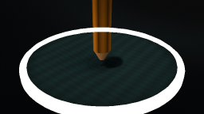
视觉工具实际返回图片 3
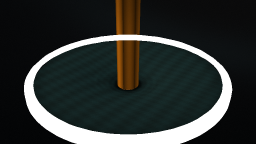
视觉工具实际返回图片 4
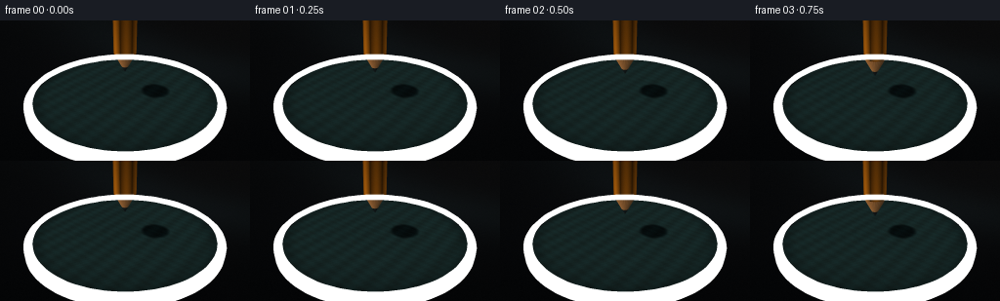
视觉工具实际返回图片 5
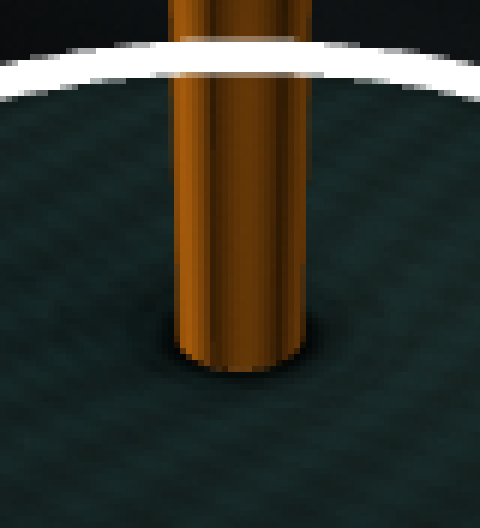
视觉工具实际返回图片 6
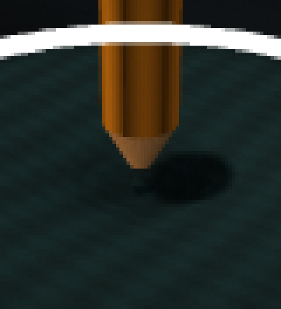
视觉工具实际返回图片 7
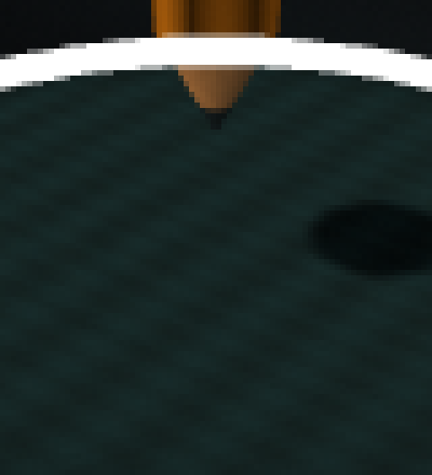
视觉工具实际返回图片 8
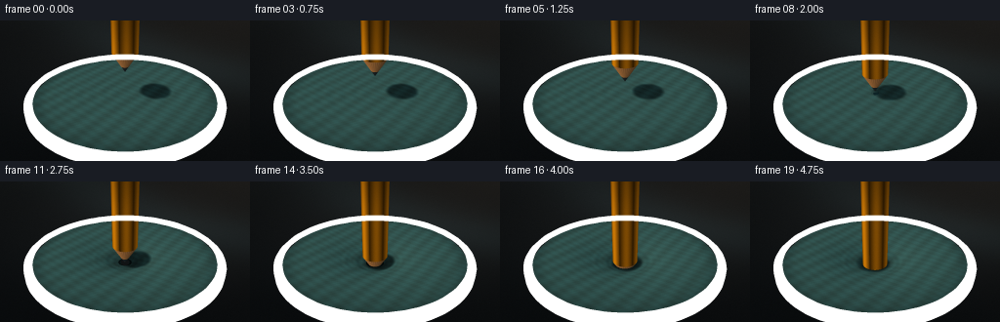
视觉工具实际返回图片 9
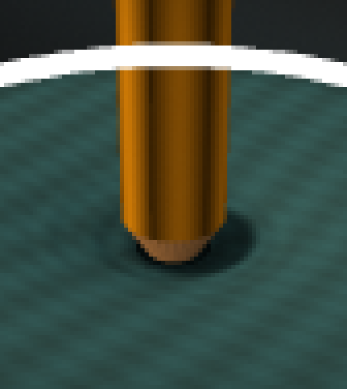
视觉工具实际返回图片 10
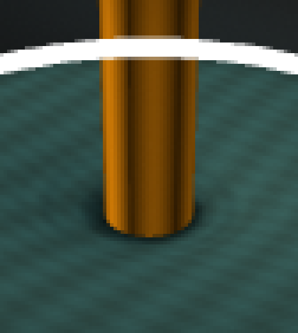
视觉工具实际返回图片 11
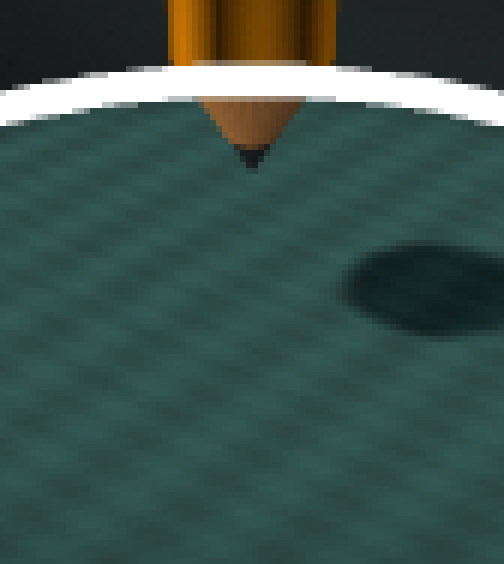
视觉工具实际返回图片 12
视觉工具实际返回图片 13
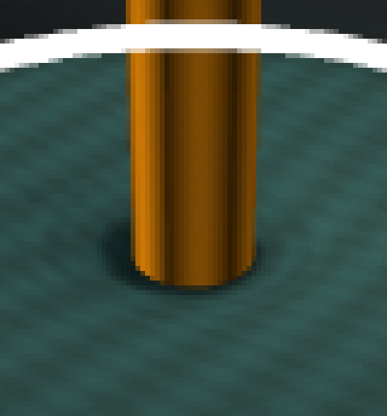
保存候选 4 份；完成命令 21 次；可验证图片返回 13 张。原始 API 响应与完整日志保留在本地。